在Spring Boot的入口类中，我们通常是通过调用SpringApplication的run方法来启动Spring Boot项目。这节我们来深入学习下SpringApplication的一些细节。
自定义SpringApplication
默认的我们都是直接通过SpringApplication的run方法来直接启动Spring Boot，其实我们可以通过一些API来调整某些行为。
通过SpringApplication API调整
我们新建一个SpringBoot项目，Spring Boot版本为2.1.0.RELEASE，artifactId为SpringApplication，并引入spring-boot-starter-web依赖。项目结构如下所示:
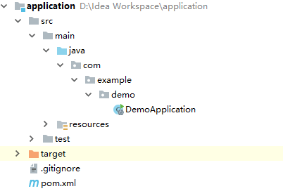
我们将入口类的代码改为：
1 | SpringApplication application = new SpringApplication(DemoApplication.class); |
通过调用SpringApplication的方法，我们关闭了Banner的打印，设置应用环境为非WEB应用，profiles指定为dev。除此之外，SpringApplication还包含了许多别的方法，具体可以查看源码或者官方文档：
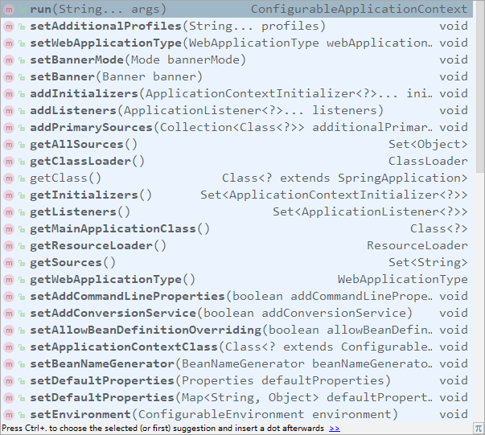
通过SpringApplicationBuilder API调整
SpringApplicationBuilder提供了Fluent API，可以实现链式调用，下面的代码和上面的效果一致，但在编写上较为方便：
1 | new SpringApplicationBuilder(DemoApplication.class) |
SpringApplication准备阶段
SpringApplication的生命周期阶段大致可以分为准备阶段和运行阶段。
我们通过源码来查看SpringApplication的有参构造器：
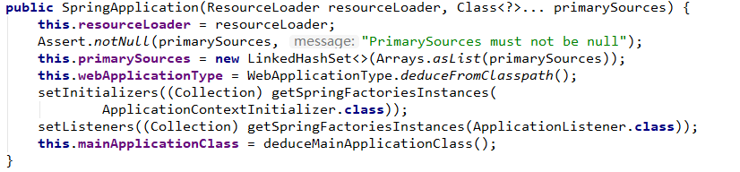
通过有参构造器里的代码我们可以将SpringApplication的准备阶段分为以下几个步骤：
配置源
构造器中this.primarySources = new LinkedHashSet<>(Arrays.asList(primarySources));这行代码用于加载我们配置的Spring Boot Bean源。通常我们使用SpringApplication或者SpringApplicationBuilder的构造器来直接指定源。
所谓的Spring Boot Bean源指的是某个被@SpringBootApplication注解标注的类，比如入口类：
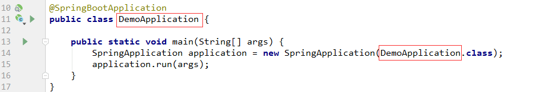
我们也可以将上面的代码改为下面这种方式：
1 | public class DemoApplication { |
这样也是可行的。查看SpringApplication的单个参数构造器：

说明我们除了配置单个源外，还可以配置多个源。
推断应用类型
构造器中这行this.webApplicationType = WebApplicationType.deduceFromClasspath();代码用于推断当前Spring Boot应用类型。
Spring Boot 2.0后，应用可以分为下面三种类型：
WebApplicationType.NONE：非WEB类型；WebApplicationType.REACTIVE：Web Reactive类型；WebApplicationType.SERVLET：Web Servlet类型。
WebApplicationType.deduceFromClasspath()或根据当前应用ClassPath中是否存在相关的实现类来判断应用类型到底是哪个，deduceFromClasspath方法的源码如下所示:
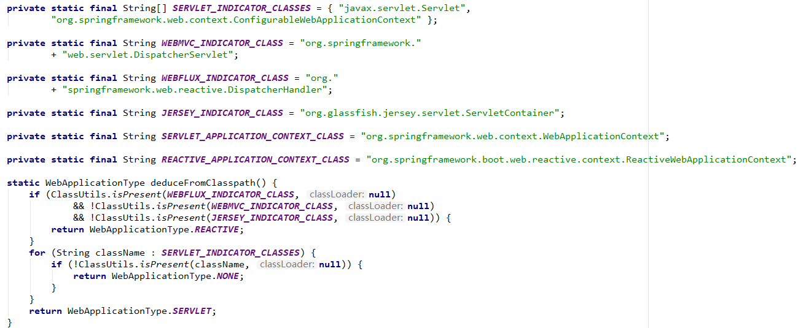
我们也可以直接通过SpringApplication的setWebApplicationType方法或者SpringApplicationBuilder的web方法来指定当前应用的类型。
加载应用上下文初始器
接着下一行代码setInitializers((Collection) getSpringFactoriesInstances(ApplicationContextInitializer.class));用于加载应用上下文初始器ApplicationContextInitializer。
getSpringFactoriesInstances方法的源码如下所示：
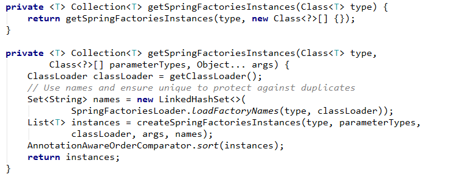
上面代码利用Spring工厂加载机制，实例化ApplicationContextInitializer实现类，并进行排序。
所以我们可以通过实现ApplicationContextInitializer接口用于在Spring Boot应用初始化之前执行一些自定义操作。
举个例子，在com.example.demo下新建initializer包，然后创建一个HelloApplicationContextInitializer类，实现ApplicationContextInitializer接口：
1 | (Ordered.HIGHEST_PRECEDENCE) |
上面代码中实现了initialize方法，并且使用@Order注解指定优先级。其中Ordered.HIGHEST_PRECEDENCE等于Integer.MIN_VALUE，Ordered.LOWEST_PRECEDENCE等于Integer.MAX_VALUE。所以数值越小，优先级越高。
除了使用@Order注解来指定优先级外，我们也可以通过实现org.springframework.core.Ordered接口的getOrder方法来指定优先级。
接着我们来创建一个优先级比HelloApplicationContextInitializer低的Initializer —— AfterHelloApplicationContextInitializer：
1 | public class AfterHelloApplicationContextInitializer implements ApplicationContextInitializer, Ordered { |
上面通过getOrder方法来指定了优先级为最低优先级。
创建好后，我们还需在工厂配置文件里配置这两个实现类。在resources目录下新建META-INF目录，并创建spring.factories文件：
1 | # Initializers |
这时候，启动Spring Boot项目，会发现控制台在打印Banner后就执行了这两个初始化器，并且HelloApplicationContextInitializer的initialize方法执行时机先于AfterHelloApplicationContextInitializer的initialize方法：
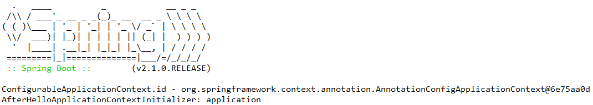
加载应用事件监听器
在加载完应用上下文初始器后，下一行的setListeners((Collection) getSpringFactoriesInstances(ApplicationListener.class));代码加载了应用事件监听器。与加载事件上下文初始器类似，Spring Boot也是通过Spring的工厂方法来实例化ApplicationListener的实现类，并进行排序。
既然是事件监听，那么其可以监听什么事件呢？其监听的是ApplicationEvent接口的实现类，我们查看一下都有哪些事件实现了这个接口：
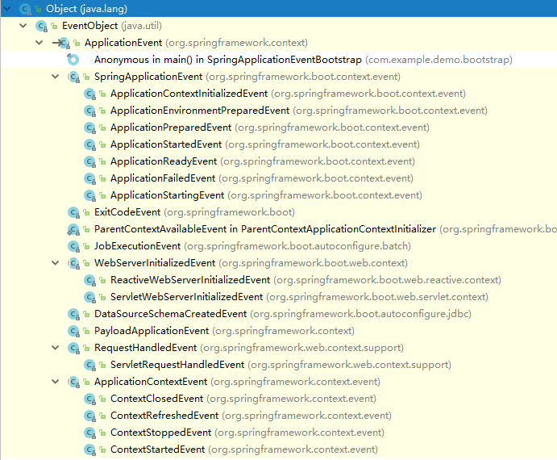
这里我们以ContextClosedEvent为例子来编写自定义的应用事件监听器，监听Spring上下文关闭事件。
在com.example.demo下新建listener包，然后创建一个ContextClosedEventListener类，实现ApplicationListener接口：
1 | (Ordered.HIGHEST_PRECEDENCE) |
上面代码实现了对ContextClosedEvent事件的监听，并且分配了最高优先级。
接着创建一个优先级比ContextClosedEventListener低的上面代码实现了对ContextClosedEvent事件监听器AfterContextClosedEventListener：
1 | public class AfterContextClosedEventListener implements ApplicationListener<ContextClosedEvent>, Ordered { |
最后，别忘了在Spring工厂配置文件里进行配置：
1 | # Application Listeners |
在Spring Boot入口类中将环境指定为非WEB环境（这样在启动后应用会马上关闭）:
1 | new SpringApplicationBuilder(DemoApplication.class) |
运行Spring Boot入口类，控制台输出如下： 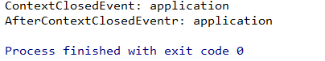
推断入口类
接着构造器里的代码下一行this.mainApplicationClass = deduceMainApplicationClass();用于推断运行Spring Boot应用的入口类。查看deduceMainApplicationClass方法源码：
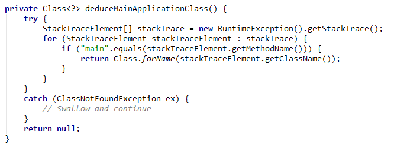
代码主要逻辑是根据Main线程执行堆栈判断实际的入口类。
准备阶段介绍完毕后，接下来开始介绍运行阶段。
SpringApplication运行阶段
SpringApplication的运行阶段对应SpringApplication的run方法，我们查看其源码：
1 | public ConfigurableApplicationContext run(String... args) { |
运行阶段大致可以分为下面这几个过程：
开启时间监听
run方法开头的这两行代码用于开启时间监听：
1 | StopWatch stopWatch = new StopWatch(); |
上面代码用于开启Spring Boot应用启动时间监听，配合下面的stopWatch.stop();便可以计算出完整的启动时间。
开启运行监听器
run方法的这几行代码用于加载Spring应用运行监听器（SpringApplicationRunListener）：
1 | SpringApplicationRunListeners listeners = getRunListeners(args); |
getRunListeners方法源码：
1 | private SpringApplicationRunListeners getRunListeners(String[] args) { |
上面代码通过SpringFactoriesLoader检索META-INF/spring.factories找到声明的所有SpringApplicationRunListener的实现类并将其实例化，然后装配到List<SpringApplicationRunListener>运行监听器集合中。
listeners.started();用于遍历运行监听器集合中的所有SpringApplicationRunListener的实现类，并逐一调用它们的starting方法，广播Spring Boot应用要开始启动了。
在Spring Boot中SpringApplicationRunListener接口用于监听整个Spring Boot应用生命周期，其代码如下所示：
1 | public interface SpringApplicationRunListener { |
这些方法对应着Spring Boot应用生命周期的各个阶段：
| 方法名称 | 对应生命周期 | Spring Boot起始版本 |
|---|---|---|
| starting() | Spring 应用刚启动 | 1.0 |
| environmentPrepared(ConfigurableEnvironment) | ConfigurableEnvironment 准备完毕，允许将其调整 | 1.0 |
| contextPrepared(ConfigurableApplicationContext) | ConfigurableApplicationContext 准备完毕，允许将其调整 | 1.0 |
| contextLoaded(ConfigurableApplicationContext) | ConfigurableApplicationContext 已装载，但仍未启动 | 1.0 |
| started(ConfigurableApplicationContext) | ConfigurableApplicationContext 已启动，此时 Spring Bean 已初始化完成 | 2.0 |
| running(ConfigurableApplicationContext) | Spring 应用正在运行 | 2.0 |
| failed(ConfigurableApplicationContext,Throwable) | Spring 应用运行失败 | 2.0 |
我们在com.example.demo.linstener下自定义一个SpringApplicationRunListener接口实现类HelloSpringApplicationRunListener：
1 | public class HelloApplicationRunListener implements SpringApplicationRunListener { |
通过这个实现类，我们可以在Spring Boot应用刚启动的时候在控制台输出HelloApplicationRunListener starting......。
因为其基于Spring的工厂方法来实现，所以我们需要在spring.factories文件里配置这个实现类:
1 | # Run Listeners |
启动Spring Boot应用便可以在控制台看到如下输出了：
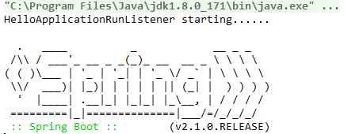
创建 Environment
run方法中的这行代码用于创建并配置当前SpringBoot应用将要使用的Environment（包括配置要使用的PropertySource以及Profile）：
1 | ConfigurableEnvironment environment = prepareEnvironment(listeners, applicationArguments); |
我们已经在准备阶段里推断出了应用类型，这里只要根据相应的应用类型来创建相应的应用环境即可，类型和环境对应关系如下：
Web Reactive： StandardReactiveWebEnvironment
Web Servlet： StandardServletEnvironment
非 Web： StandardEnvironment
在prepareEnvironment方法中会执行listeners.environmentPrepared(environment);，用于遍历调用所有SpringApplicationRunListener实现类的environmentPrepared()方法，广播Environment准备完毕。
是否打印Banner
run方法中的这行代码会根据我们的配置来决定是否打印Banner：
1 | Banner printedBanner = printBanner(environment); |
创建Context
run方法中的这行代码用于创建ApplicationContext：
1 | context = createApplicationContext(); |
不同的环境对应不同的ApplicationContext：
Web Reactive： AnnotationConfigReactiveWebServerApplicationContext
Web Servlet： AnnotationConfigServletWebServerApplicationContext
非 Web： AnnotationConfigApplicationContext
装配Context
run方法中的这行代码用于装配Context：
1 | prepareContext(context, environment, listeners, applicationArguments, printedBanner); |
方法prepareContext的源码如下所示:
1 | private void prepareContext(ConfigurableApplicationContext context, |
prepareContext方法开头为ApplicationContext加载了environment，之后通过applyInitializers方法逐个执行ApplicationContextInitializer的initialize方法来进一步封装ApplicationContext，并调用所有的SpringApplicationRunListener实现类的contextPrepared方法，广播ApplicationContext已经准备完毕了。
之后初始化IOC容器，并调用SpringApplicationRunListener实现类的contextLoaded方法，广播ApplicationContext加载完成，这里就包括通过@EnableAutoConfiguration导入的各种自动配置类。
Refresh Context
run方法中的这行代码用于初始化所有自动配置类，并调用ApplicationContext的refresh方法：
1 | refreshContext(context); |
广播应用已启动
run方法中的这行代码用于广播Spring Boot应用已启动：
1 | listeners.started(context); |
started方法会调用所有的SpringApplicationRunListener的finished方法，广播SpringBoot应用已经成功启动。
执行Runner
run方法中的这行代码callRunners(context, applicationArguments);遍历所有ApplicationRunner和CommandLineRunner的实现类，并执行其run方法。我们可以实现自己的ApplicationRunner或者CommandLineRunner，来对Spring Boot的启动过程进行扩展。
我们在com.example.demo下新建runner包，然后创建一个ApplicationRunner的实现类HelloApplicationRunner：
1 |
|
这里我们需要将HelloApplicationRunner使用@Component注解标注，让其注册到IOC容器中。
然后再创建一个CommandLineRunner的实现类HelloCommandLineRunner：
1 |
|
启动Spring Boot应用，便可以在应用刚启动好后看到如下输出：

广播应用运行中
run方法中的这行代码listeners.running(context);用于调用SpringApplicationRunListener的running方法，广播Spring Boot应用正在运行中。
当run方法运行出现异常时，便会调用handleRunFailure方法来处理异常，该方法里会通过listeners.failed(context, exception);来调用SpringApplicationRunListener的failed方法，广播应用启动失败，并将异常扩散出去。
上面所有的广播事件都是使用Spring的应用事件广播器接口ApplicationEventMulticaster的实现类SimpleApplicationEventMulticaster来进行广播的。
源码链接：https://github.com/wuyouzhuguli/SpringAll/tree/master/45.Spring-Boot-SpringApplication